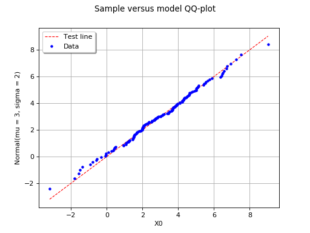

Using QQ-plot to compare two samples¶
Let  be a scalar uncertain variable modeled as a random
variable. This method deals with the construction of a dataset prior to
the choice of a probability distribution for . A QQ-plot (where
“QQ” stands for “quantile-quantile”) is a tool that may be used to
compare two samples
be a scalar uncertain variable modeled as a random
variable. This method deals with the construction of a dataset prior to
the choice of a probability distribution for . A QQ-plot (where
“QQ” stands for “quantile-quantile”) is a tool that may be used to
compare two samples  and
and
 ; the goal is to determine
graphically whether these two samples come from the same probability
distribution or not. If this is the case, the two samples should be
aggregated in order to increase the robustness of further statistical
analysis.
; the goal is to determine
graphically whether these two samples come from the same probability
distribution or not. If this is the case, the two samples should be
aggregated in order to increase the robustness of further statistical
analysis.
A QQ-plot is based on the notion of quantile. The
 -quantile
-quantile  of , where
of , where
 , is defined as follows:
, is defined as follows:

If a sample of is
available, the quantile can be estimated empirically:
the sample
is first placed in
ascending order, which gives the sample
 ;
;then, an estimate of the
-quantile is:![\begin{aligned}
\widehat{q}_{X}(\alpha) = x_{([N\alpha]+1)}
\end{aligned}](../../_images/math/56109ae317e0d87031f766583431dec7a384948f.svg)
where ![[N\alpha]](../../_images/math/8d60d0527f3824c774305d2c866e11002ee02961.svg) denotes the integral part of
denotes the integral part of
 .
.
Thus, the  smallest value of the sample
smallest value of the sample
 is an estimate
is an estimate  of the
-quantile where
of the
-quantile where  (
( ). Let us then consider our second sample
; this one also provides an
estimate
). Let us then consider our second sample
; this one also provides an
estimate  of this same quantile:
of this same quantile:
If both samples correspond to the same probability distribution,
then and
should be close. Thus, graphically, the
points
 should be close to the diagonal.
should be close to the diagonal.
The following figure illustrates the principle of a QQ-plot with two
samples of size and  . Note that the unit of the
two axis is that of the variable studied. In this example, the
points remain close to the diagonal and the hypothesis “the two samples
come from the same distribution” does not seem irrelevant, even if a
more quantitative analysis should be carried out to confirm this.
. Note that the unit of the
two axis is that of the variable studied. In this example, the
points remain close to the diagonal and the hypothesis “the two samples
come from the same distribution” does not seem irrelevant, even if a
more quantitative analysis should be carried out to confirm this.
(Source code, png, hires.png, pdf)
{kind=link}
{kind=link}

(Source code, png, hires.png, pdf)
{kind=link}
{kind=link}

In this second example, the two samples clearly arise from two different distributions.
API:
See
VisualTest_DrawQQplot()to draw a QQ plot
Examples: